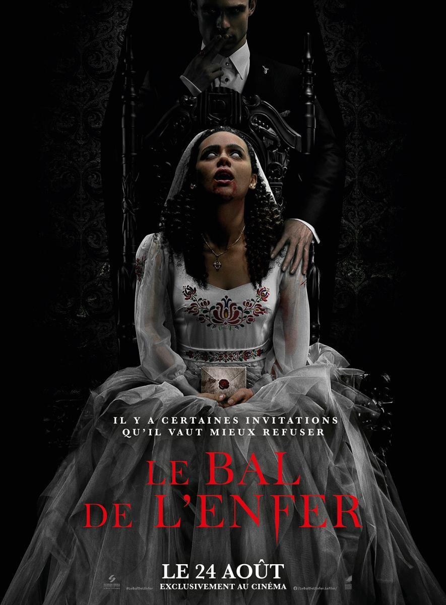
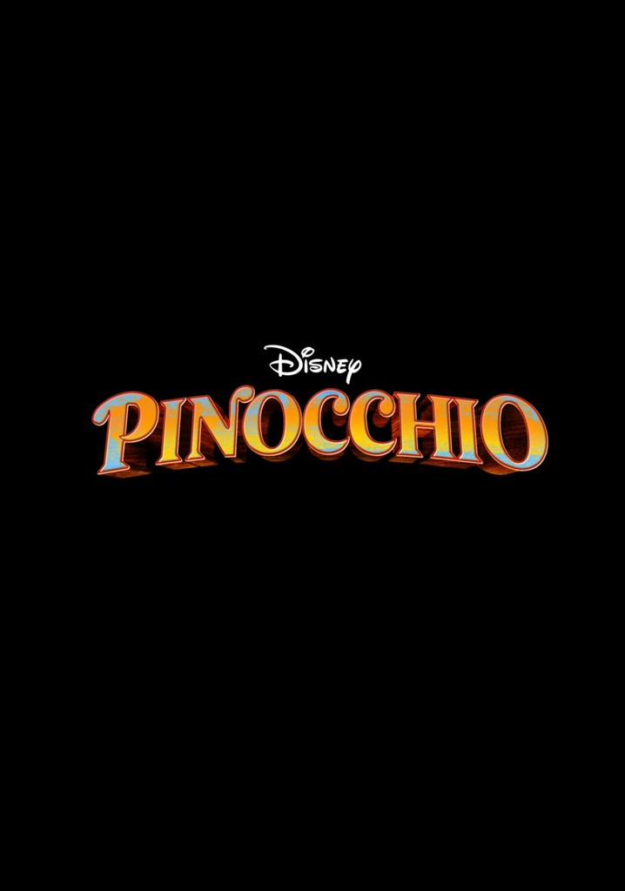
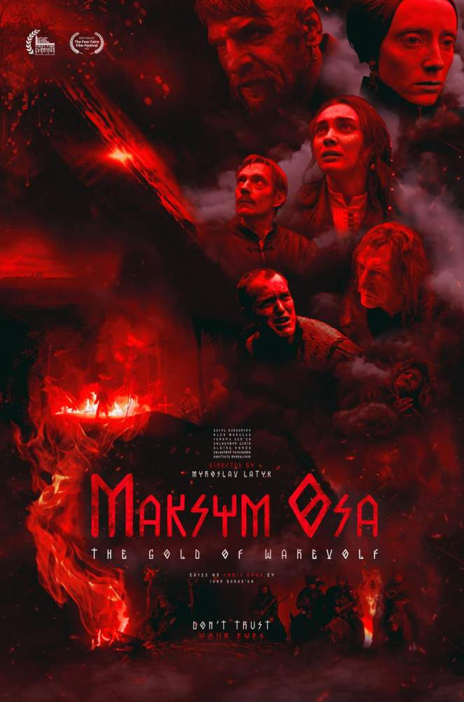

Іві проходить тест ДНК, щоб знайти втрачених родичів. Це призводить
до появи двоюрідного брата та його родини, які запрошують дівчину на
весілля в англійській глибинці. Там її намагається спокусити
божевільний господар будинку, а потім героїню втягують у дику та
криваву гру на виживання.
«Запрошення» / The Invitation
- Жанр: жахи, трилер
- Дата прем’єри: 1 вересня
- Де подивитися: кінотеатри

«Над безоднею» / Fall
- Жанр: трилер
- Дата прем’єри: 8 вересня
- Де подивитися: кінотеатри

Подруги-альпіністки вирішують піднятися на 600-метрову радіовежу.
Їхня пригода обертається смертельною пасткою,
з якої дівчатам належить виплутуватися самостійно.
«Піноккіо» / Pinocchio
- Жанр: фентезі, драма, комедія, пригоди, сімейний
- Дата прем’єри: 8 вересня
- Де подивитися: Disney+

Культовий режисер Роберт Земекіс (трилогія «Назад у майбутнє»,
«Форест Гамп», «Хто підставив кролика Роджера») зняв
для Disney+ кіноадаптацію однойменного мультфільму 1940 про
дерев’яного хлопчика, заснованого на книзі італійського
письменника
Карло Коллоді. У головних ролях Том Хенкс, Синтія Еріво та Люк
Еванс.
«Максим Оса»
- Жанр: історія, пригоди
- Дата прем’єри: 8 вересня
- Де подивитися: кінотеатри

Іві проходить тест ДНК, щоб знайти втрачених родичів. Це призводить
до появи двоюрідного брата та його родини, які запрошують дівчину на
весілля в англійській глибинці. Там її намагається спокусити
божевільний господар будинку, а потім героїню втягують у дику та
криваву гру на виживання.